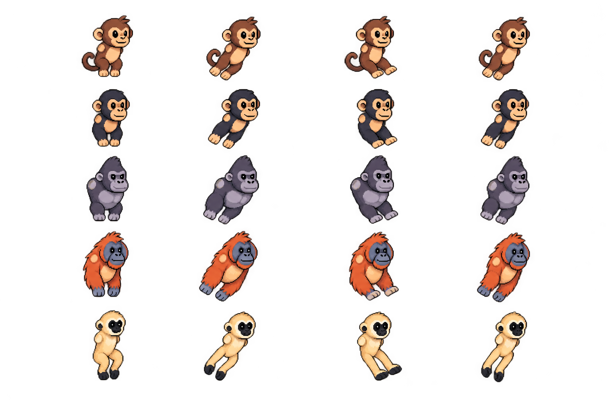
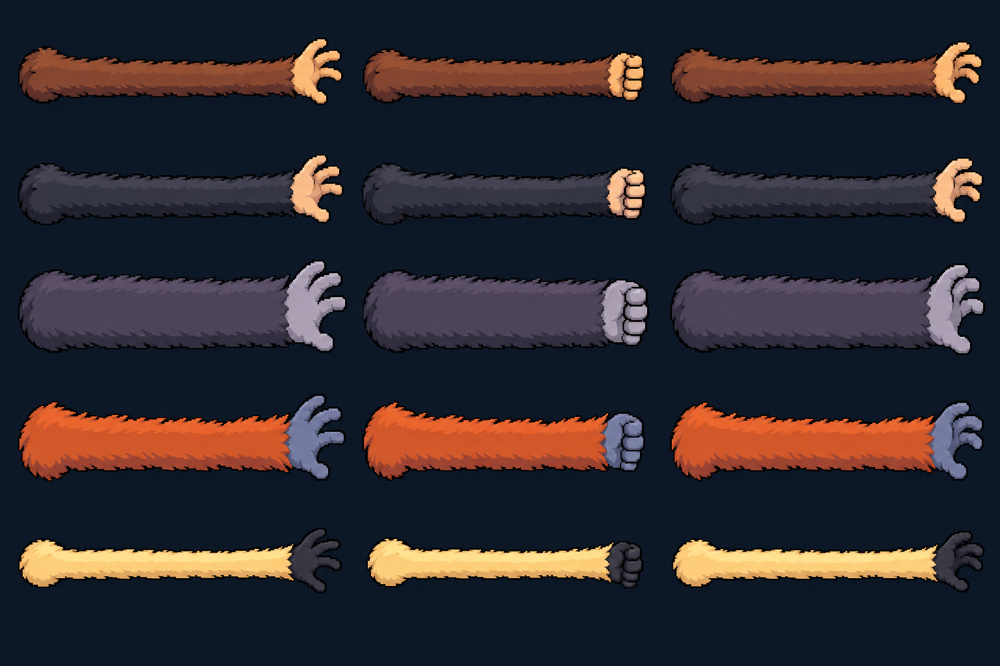

Stretch-arm swing components
Five locked characters. Separate model and arm sheets for a shoulder-to-anchor stretch mechanic.
Body layer · four poses per character
Both arms omitted for modular assembly. Shoulder patches mark the attachment area.

Arm layer · reach / grip / release
Shoulder at left, hand at right. Rotate toward the map anchor and stretch the shaft.

Prototype sheets still need background removal, precise pivots and pose cleanup before game import. Assembly notes · Generation prompts